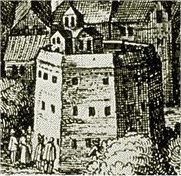
Shakespearovo divadlo Globe na dobové rytinì
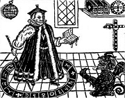
Faust
|
RENESANÈNÍ ANGLIE
V Anglii se renesance plnì prosazuje a� v 16. stol. Na dvoøe Jindøicha VIII. Tudora (1509-1547) pùsobil nìmeckı portrétní malíø Hans Holbein (Thomas More, Erasmus Rotterdamskı…). Tento panovník reagoval na protestantské hnutí v Evropì zalo�ením anglikánské církve (1534). Víceménì formální akt (pokraèovala katolická liturgie, církevní organizace se nezmìnila) pøinesl králi hlavnì peníze (konfiskace církevního majetku) a vliv (církev nepodléhala pape�i, ale anglickému panovníkovi).
Al�bìtinské divadlo
Rozkvìt renesance nastává bìhem dlouhého panování královny Al�bìty (1558-1603). V roce 1576 vzniklo v Londınì první stálé divadlo a brzy se objevila další. Šlo o døevìné budovy okrouhlého tvaru, které nemìly støechu. Hrálo se za denního svìtla. V �enskıch rolích vystupovali mladí chlapci. Nejvıznamnìjším pøedstavitelem al�bìtinského divadla byl William Shakespeare [viljem šejkspír] a jeho pøedchùdci Christopher Marlowe [kristofr márlou] (Tragická historie doktora Fausta) a Ben Johnson [d�onsn] (Alchymista). V roce 1642 parlament zakázal všechna veøejná divadelní pøedstavení. Pøesto�e byla roku 1660 dvì divadla otevøena, nìkdejší slávy u� nebylo dosa�eno a vıznam dramatu postupnì klesal. A� od této doby mohly na jevišti vystupovat nejen mu�i, ale i hereèky.
|
Historie
Ve stoleté válce (1337-1453) byla Anglie pora�ena Francií a ztratila všechny dr�avy na kontinentì. Bìhem války rù�í (1455-1485) se prakticky vyvra�dily nejsilnìjší anglické rody (Yorkové a Lancasteøi). Po porá�ce Richarda III. u Bosworthu získávají trùn Tudorovci. V roce 1534 zalo�il Jindøich VIII. anglikánskou církev. Za vlády královny Al�bìty (1558-1603) dochází ke kulturnímu rozmachu zemì. Válka mezi parlamentem a Karlem I. (†1649) skonèila královou popravou a vyhlášením republiky v èele s Cromwellem (†1658). V roce 1660 se na trùn vracejí Stuartovci.
|
Geoffrey Chaucer (1340-1400)
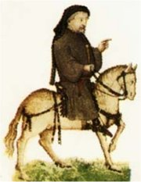
Geoffrey Chaucer [d�efri èósr] se v mládí zúèastnil stoleté války, ale byl zajat Francouzi. Díky sòatku s dvorní dámou se mohl vydat na politickou dráhu. Cestoval po Itálii, kde se seznámil s texty renesanèních umìlcù.
|
Geoffrey Chaucer: Canterburské povídky
Rámec Chaucerovıch Canterburskıch povídek [kentrber-] tvoøí cesta tøiceti poutníkù (rytíø, kuchaø, abatyše, lékaø, student, faráø...) ke hrobu sv. Tomáše Becketa v Canterbury. V hostinci U Kabátce se rozhodnou, �e ka�dı bude vyprávìt ètyøi pøíbìhy, ale z tohoto plánovaného poètu staèil Chaucer napsat pouze 24 povídek. �ánrovì jde o rytíøské historie, milostné pøíbìhy, kratochvilná vyprávìní a pouèné historky. Chaucer èerpal námìty ze starších dìl, ale pøíbìhùm dává jednotnou veršovanou formu. V prologu jsou velmi barvitì pøedstaveni všichni poutníci, potom následují jednotlivé povídky.
|
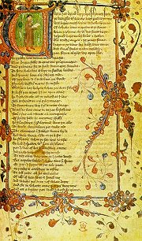
Rukopis Canterburskıch povídek
Charakterizuj „dobrou �enu z poblí� Bath“. Co se o ní dozvídáme?
|
William Shakespeare
(1564-1616)
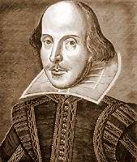
Shakespeare se narodil ve Stratfordu nad Avonou jako syn zámo�ného rukavièkáøe. Po studiu si zvolil nejistou dráhu herce a dramatika. Nejprve pùsobí u rùznıch divadelních spoleèností v Londınì, pozdìji se stává spolumajitelem nového divadla Globe (Zemìkoule), kde uvádí své hry a v nìkterıch i vystupuje. Kromì divadelních her psal i sonety.
|
William Shakespeare: Hamlet
Nejslavnìjší Shakespearova tragédie Hamlet, králevic dánskı vypráví pøíbìh syna, kterı pomstil vra�du svého otce. K princi Hamletovi promlouvá duch mrtvého otce a sdìluje mu, �e ho zabil jeho bratr Klaudius, aby se zmocnil trùnu a vdovy po zemøelém králi. Hamlet pøedstírá šílenství, odmítne Ofélii a neš�astnou náhodou zabije jejího otce Polonia, kterı ho špehuje ukrytı za závìsem. Neš�astná Ofélie se zblázní a umírá. Její bratr Laertes se utká s Hamletem v souboji. Hamlet zabíjí krále i Laerta, ale zemøe, proto�e ho Oféliin bratr zranil otrávenım kordem. Umírá i Hamletova matka, která omylem vypila jed urèenı jemu…
Jako u vìtšiny Shakespearovıch dìl není námìt zcela pùvodní, ale jeho zpracování je bravurní. Jméno titulního hrdiny odkazuje na Shakespearova syna Hamneta, kterı zemøel v dìtském vìku.
|
Shakespearovy hry
Shakespearovy hry mù�eme rozdìlit podle tvùrèích období, námìtù nebo �ánrù. Vısadní místo zaujímají v jeho tvorbì tragédie (Hamlet, Othello, Macbeth, Král Lear, Romeo a Julie…), napsal také øadu komedií (Zkrocení zlé �eny, Sen noci svatojánské, Jak se vám líbí, Veèer tøíkrálovı, Kupec benátskı, Komedie plná omylù, Veselé panièky Windsorské…). V historickıch dramatech èerpal námìty z antiky (Julius Caesar, Antonius a Kleopatra…) i anglické historie (Jindøich IV., V., VI. a VIII., Richard II. a III. a Král Jan). V posledním období psal tzv. romance (Perikles, Cymbelín, Zimní pohádka a Bouøe), dramata s pohádkovımi a fantastickımi prvky.
Nauè se zpamìti tento monolog.
Je tì�ké bıt hercem? Dokázal/a by sis zapamatovat celou divadelní hru?
|
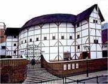
Moderní rekonstrukci Shakespearova divadla Globe mù�eme najít v Londınì i v Praze.
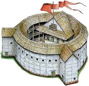
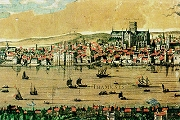
Visscherova veduta Londına
|
William Shakespeare: Zkrocení zlé �eny
Hlavním námìtem renesanèních komedií bıvá láska k �enì, kterou získá nejmazanìjší z nápadníkù. Typickım pøíkladem je Zkrocení zlé �eny. Lucenzio chce získat náklonnost krásné Blanky. Aby se k ní vùbec dostal, musí se pøestrojit za uèitele. Blanèin otec navíc po�aduje, aby se nejprve vdala její starší sestra Kateøina. Ta ale mu�e nesnáší a je tak hubatá, �e se jí všichni bojí. Odvahu najde a� vtipnı šlechtic Petruccio. Lichotky na Kateøinu sice neplatí, ale Petruccio dostane od jejího otce po�ehnání. Okam�itì zmizí a objeví se a� na svatbì. Je pøíšernì vyhastrošenı, neustále nadává a navíc si ještì tentı� den odveze Kateøinu na svùj venkovskı statek, jako by byla jeho majetek... Pokoøená Kateøina se brzy zmìní a stane se vzornou man�elkou.
V této høe pou�il Shakespeare oblíbenı postup divadla na divadle. Celı pøíbìh se toti� odehrává jako pøedstavení koèovné spoleènosti, které se hraje pro mocného velmo�e. Tím je ve skuteènosti chudı opilec, jemu� bohatı šlechtic namluví, �e všechno, co dosud pro�il, bylo pouze pøeludem právì vyléèeného šílenství...
|
Kdo byl Shakespeare?
Nad Shakespearovou osobou se vznáší øada otazníkù. Nìkteøí vìdci se domnívají, �e Shakespeare je pouze pseudonym. Kdo se pod ním skrıval? Mo�ná dramatik Christopher Marlowe (1564-1593), jeho� smrt pøi hospodské rvaèce mohla bıt fingovaná (Marlowe mìl problémy kvùli svım názorùm). Dalším adeptem je filozof Francis Bacon [fránsis bejkn] (1561-1626), autor spisu Nové organon a fantazie o ideální spoleènosti Nová Atlantida. Jiné odvá�né tvrzení vychází z kvality a velkého mno�ství Shakespearovıch her. Podle nìj jde o nìkolik autorù publikujících pod spoleènım pseudonymem...
Na èem je zalo�ena Shakespearova komika?
Charakterizuj jednotlivé postavy Shakespearovy komedie.
|
Shakespearovy hry
Všechny Shakespearovy hry jsou veršované (blankvers) a jejich autor je pova�ován za nejvìtšího básníka všech dob. Tragické prvky se èasto mísí s komickımi. Vztahy mezi jednotlivımi postavami jsou znaènì slo�ité, ale motivace jejich jednání je vìrohodná. Díky tomu se staly všeobecnì známımi (Hamlet, Romeo a Julie, Othello, Macbeth, Lear...). Tragické postavy jsou pro získání nebo udr�ení moci ochotné vra�dit své nejbli�ší a svùj zloèin skrıvají dalšími vra�dami. Komické postavy zase pro lásku udìlají cokoliv (pøevleky, podvody, drobné l�i...).
|
Shakespearovy hry
Chorus:
Dva rody, stejnì staroslavné oba –
jsme v krásné Veronì – svùj dávnı hnìv
zas �enou na nù� a zas obèanova
v obèanskıch rebeliích teèe krev.
Dva milující, pod neš�astnou hvìzdou
z tìch rodù narozeni, rodièùm
smír vykupují køí�ovou svou cestou:
svou smrtí usmiøují s domem dùm.
Tu jejich lásku, smrtí znamenanou,
a záští, zuøivìjší napoøád,
v nìm� staøí po zmar dìtí neustanou,
dvì hodiny vám nyní budem hrát.
A jestli se vám pøíbìh nezalíbí,
svou snahou nahradíme, co mu chybí.
|
Která Shakespearova hra zaèíná tímto prologem?
Pokus se podrobnìji pøevyprávìt její dìj.
|
Shakespeare zùstává velmi oblíbenım dramatikem dodnes. Dosvìdèuje to øada inscenací, adaptací i parodií (Vyskoèilùv Haprdáns). Skoro všechny Shakespearovy hry pøelo�il do èeštiny u� J.V.Sládek.
Ve kterıch hrách vystupuje Ofélie, Desdemona, Jago, Falstaff, Prospero a Puk?
Najdi v programu èeskıch divadel, které Shakespearovy hry se právì uvádìjí.
Které Shakespearovské pøekladatele znáš?
Proè se znovu pøekládají u� jednou pøelo�ené hry?
Která ze Shakespearovıch her se odehrává v Èechách?
|
Thomas More
(1478-1535)
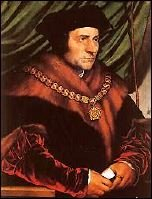
Thomas More [tomes mór] byl anglickı právník a zastával øadu vıznamnıch politickıch funkcí (pøedseda Dolní snìmovny, kancléø…). Dostal se však do konfliktu s králem Jindøichem VIII., proto�e nepomohl posvìtit jeho rozvod a novı sòatek s Annou Boleynovou a odmítl krále uznat za hlavu anglikánské církve. Za trest byl uvìznìn a popraven. Katolická církev Mora pozdìji prohlásila za svatého. Proslavil se latinskım spisem Utopie.
|
Thomas More: Utopie
Ve svém díle Utopie vystupuje More jako pouhı zapisovatel vypravování zkušeného námoøníka Rafaela Hythlodaia, kterı doprovázel Ameriga Vespucciho a na tomto ostrovì strávil pìt let. Navozuje tak dojem autentického svìdectví. Utopie je vylíèena jako ideální zemì, kde jsou si všichni rovni, není zde �ádná kriminalita, nepou�ívají se peníze atd., jde tedy o pravı opak anglické spoleènosti na zaèátku 16. století. Detailnì je popsán �ivot v utopijskıch mìstech, spoleèenské vztahy, nábo�enství, zpùsoby cestování a válèení.
„Skonèila se odpolední øeè Rafaela Hythlodaia o zákonech a zøízeních Utopijského ostrova, dosud jen nemnohımi poznaného, v podání velmi slavného a vzdìlaného mu�e pana Tomáše Mora, mìš�ana a podsudí londınského.“
|
Ostrov Utopie
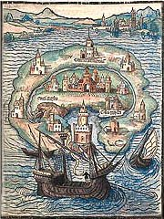
Utopijci si vùbec nevá�ili zlata, a proto z nìj vyrábìli pouta nebo noèníky...
Líbilo by se ti �ít v Morovì Utopii?
Jak si pøedstavuješ ideální spoleènost?
Dá se taková spoleènost vybudovat?
|
Internetové stránky
Anglická literatura, støedovìk, renesance, baroko
Shakespeare
Shakespeare
Shakespeare
Kuèera: Hamlet, èlánek
Globe, vystøihovánka
Globe, rekonstrukce
Utopie
Utopie
Filmy
Romeo a Julie, Zkrocení zlé �eny, re�ie F.Zeffirelli
Prosperovy knihy, re�ie P.Greenaway (Bouøe)
Sen noci svatojánské, re�ie J.Trnka (loutkovı film)
Zamilovanı Shakespeare, re�ie J.Madden
Exkurze
Divadlo Globe, Praha, Londın
|
Doporuèená èetba
Bacon, Francis: Nová Atlantida, Eseje, pøel. A.Bejblík
Bejblík, A.: Shakespearùv svìt, Praha 1978
Bejblík, Hornát, Lukeš: Al�bìtínské divadlo (3 svazky)
Brewer, Derek: Chaucer a jeho svìt, pøel. A.Bejblík, Odeon, Praha 1988
Chaucer, Geoffrey: Canterburské povídky, pøel. F.Vrba
Chaucer, G.: Canterburské povídky, pøevyprávìla E.Farjeonová, pøel. H.Skoumalová, Albatros, Praha 1985
Chudoba, František: Kniha o Shakespearovi (2 svazky)
More, Thomas: Utopie, pøel. B.Ryba, Mladá fronta, Praha 1978
Shakespeare, William: Antická dramata, Tragédie, Komedie, pøel. E.A. Saudek
Shakespeare, W.: Dvojí majestát, pøel. A.Pøidal
Shakespeare, W.: Historie (2 svazky), Praha 1964 (rejstøík postav)
Shakespeare, W.: Sonety
Shakespeare, Werich: Falstaffovo babí léto (adaptace Jindøicha IV.)
Slovník spisovatelù, Anglická literatura..., Libri, Praha 1996
Støíbrnı, Zdenìk: William Shakespeare, Praha 1964
Škola noci, Anglická renesanèní a barokní poezie, pøel. Z.Hron, Praha 1976
|
Pøiprav si referát o nìkteré z uvedenıch knih nebo internetovıch stránek.
Zinscenujte nìkteré ze Shakespearovıch dramat nebo alespoò jeho klíèové scény.
Sehrajte drama tak, jak se pøedvádìlo v al�bìtinské dobì (�enské role hráli mu�i).
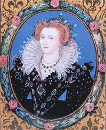
Královna Al�bìta
|
|